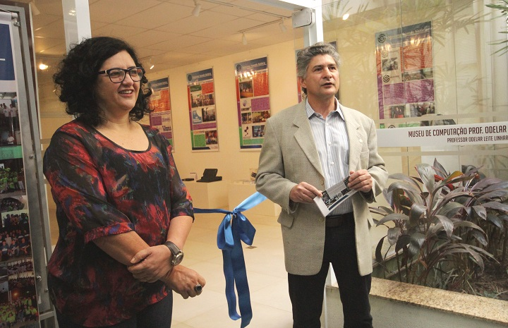

O Museu de Computação do ICMC teve sua origem como um Museu de Instrumentos de Cálculo Numérico, idealizado e iniciado pelo Prof. Odelar Leite Linhares, então professor do Departamento de Ciências de Computação e Estatística.

Uma das maiores semanas de computação do Brasil está alcançando a maioridade este ano, quando acontece sua 18ª edição. É a Semana de Computação (Semcomp)
Recebendo a visita dos estudantes calouros do ICMC. Durante a visita, eles puderam conhecer um pouco sobre a história da tecnologia e saudar o espaço do Museu

Prof. Dr. Odelar Leite Linhares bacharelou-se, em 1956, em Matemática pela extinta Universidade do Brasil. Foi pioneiro no desenvolvimento da Ciência da Computação no Estado de São Paulo...
Acervo
O Memorex Data Mark 70 é um dispositivo de armazenamento de dados, possibilitando o armazenamento de 70 milhões de bytes de dados, o que equivale a 70 Megabytes. Na época, era considerado de muito fácil manipulação e de baixo custo. Também possuía um revestimento especial na superfície do disco com o intuito de estender a durabilidade.
.
TRIUMPHATOR
A máquina de calcular TRIUMPHATOR era montada inicialmente sobre uma bancada de madeira. Trata-se de uma calculadora de quatro espécies, o que significa que ela pode realizar as quatro operações aritméticas básicas..

Computador de Prológica CP 200S
Esse computador é idêntico ao CP 200, que já era um clone do Sinclair ZX81. A diferença em relação ao modelo anterior é a placa mãe, que foi a redesenhada e inserida em uma caixa menor. Especulou-se à época que a intenção da alteração era abaixar o custo de produção do equipamento.
IMag G3
O computador Apple iMac G3 foi desenvolvido pela empresa Apple em 1998. Foi projetado com a tecnologia All in One visando portabilidade e economia de espaço, possuindo um processador PowerPC 750 de arquitetura 32-bit com velocidade de 233 MHz, possuindo um HD de 4 a 8 GB, placa de vídeo ATI Radeon onboard com 2 a 8mb, Alto-Falantes Harman/Kardon e Infra-vermelho. O computador possui memória RAM PC66 SDRAM com 32MB de memória com opção de aumento até 384 e 512 MB.